| The TCALIS Procedure |
| Gradient, Hessian, Information Matrix, and Approximate Standard Errors |
For a single-sample setting with a discrepancy function 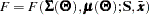, the gradient is defined as the first partial derivatives of the discrepancy function with respect to the model parameters :
| 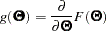 |
The Hessian is defined as the second partial derivatives of the discrepancy function with respect to the model parameters :
| 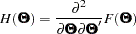 |
Suppose that the mean and covariance structures fit perfectly with in the population. The information matrix is defined as:
| 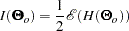 |
where the expectation is taken over the sampling space of 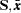.
The information matrix plays a significant role in statistical theory. Under certain regularity conditions, the inverse of the information matrix 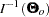 is the asymptotic covariance matrix for 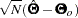, where 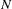 denotes the sample size and is an estimator.
In practice, is never known and can only be estimated. The information matrix is therefore estimated by the so-called empirical information matrix:
| 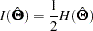 |
which is evaluated at the values of the sample estimates . Notice that this empirical information matrix, rather than the unknown 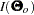, is the "information matrix" displayed in PROC TCALIS output.
Taking the inverse of the empirical information matrix with sample size adjustment, PROC TCALIS approximates the estimated covariance matrix of by:
| 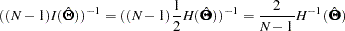 |
Approximate standard errors for can then be computed as the square roots of the diagonal elements of the estimated covariance matrix. The theory about the empirical information matrix, the approximate covariance matrix of the parameter estimates, and the approximate standard errors applies to all but the ULS and DWLS estimation methods. Standard errors are therefore not computed with the ULS and DWLS estimation methods.
If a given Hessian or information matrix is singular, PROC TCALIS offers two ways to compute a generalized inverse of the matrix and, therefore, two ways to compute approximate standard errors of implicitly constrained parameter estimates, t values, and modification indices. Depending on the G4= specification, either a Moore-Penrose inverse or a G2 inverse is computed. The expensive Moore-Penrose inverse computes an estimate of the null space by using an eigenvalue decomposition. The cheaper G2 inverse is produced by sweeping the linearly independent rows and columns and zeroing out the dependent ones.
Multiple-Group Extensions
In the section Multiple-Group Discrepancy Function, the overall discrepancy function for multiple-group analysis is defined. The same notation is applied here. To begin with, the overall discrepancy function 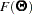 is expressed as a weighted sum of individual discrepancy functions 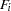’s for the groups as follows:
| 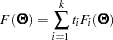 |
where
| 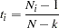 |
is the weight for group ,
| 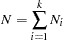 |
is the total sample size, and 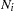 is the sample size for group .
The gradient 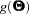 and the Hessian 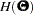 are now defined as weighted sum of individual functions. That is,
| 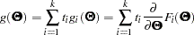 |
and
| 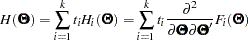 |
Suppose that the mean and covariance structures fit perfectly with in the population. If each 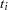 converges to a fixed constant 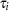 (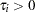) with increasing total sample size, the information matrix can be written as:
| 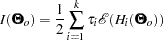 |
To approximate this information matrix, an empirical counterpart is used:
| 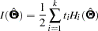 |
which is evaluated at the values of the sample estimates . Again, this empirical information matrix, rather than the unknown , is the "information matrix" output in PROC TCALIS results.
Taking the inverse of the empirical information matrix with sample size adjustment, PROC TCALIS approximates the estimated covariance matrix of in multiple-group analysis by:
| 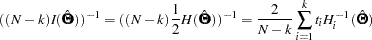 |
Approximate standard errors for can then be computed as the square roots of the diagonal elements of the estimated covariance matrix. Again, for ULS and DWLS estimation, the theory does not apply and so there are no standard errors computed in these cases.
Testing Rank Deficiency in the Approximate Covariance Matrix for Parameter Estimates
When computing the approximate covariance matrix and hence the standard errors for the parameter estimates, inversion of the scaled information matrix or Hessian matrix is involved. The numerical condition of the information matrix can be very poor in many practical applications, especially for the analysis of unscaled covariance data. The following four-step strategy is used for the inversion of the information matrix.
The inversion (usually of a normalized matrix 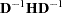) is tried using a modified form of the Bunch and Kaufman (1977) algorithm, which allows the specification of a different singularity criterion for each pivot. The following three criteria for the detection of rank loss in the information matrix are used to specify thresholds:
ASING specifies absolute singularity.
MSING specifies relative singularity depending on the whole matrix norm.
VSING specifies relative singularity depending on the column matrix norm.
If no rank loss is detected, the inverse of the information matrix is used for the covariance matrix of parameter estimates, and the next two steps are skipped.
The linear dependencies among the parameter subsets are displayed based on the singularity criteria.
If the number of parameters 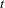 is smaller than the value specified by the G4= option (the default value is 60), the Moore-Penrose inverse is computed based on the eigenvalue decomposition of the information matrix. If you do not specify the NOPRINT option, the distribution of eigenvalues is displayed, and those eigenvalues that are set to zero in the Moore-Penrose inverse are indicated. You should inspect this eigenvalue distribution carefully.
If PROC TCALIS did not set the right subset of eigenvalues to zero, you can specify the COVSING= option to set a larger or smaller subset of eigenvalues to zero in a further run of PROC TCALIS.
Note: This procedure is experimental.
Copyright © 2009 by SAS Institute Inc., Cary, NC, USA. All rights reserved.